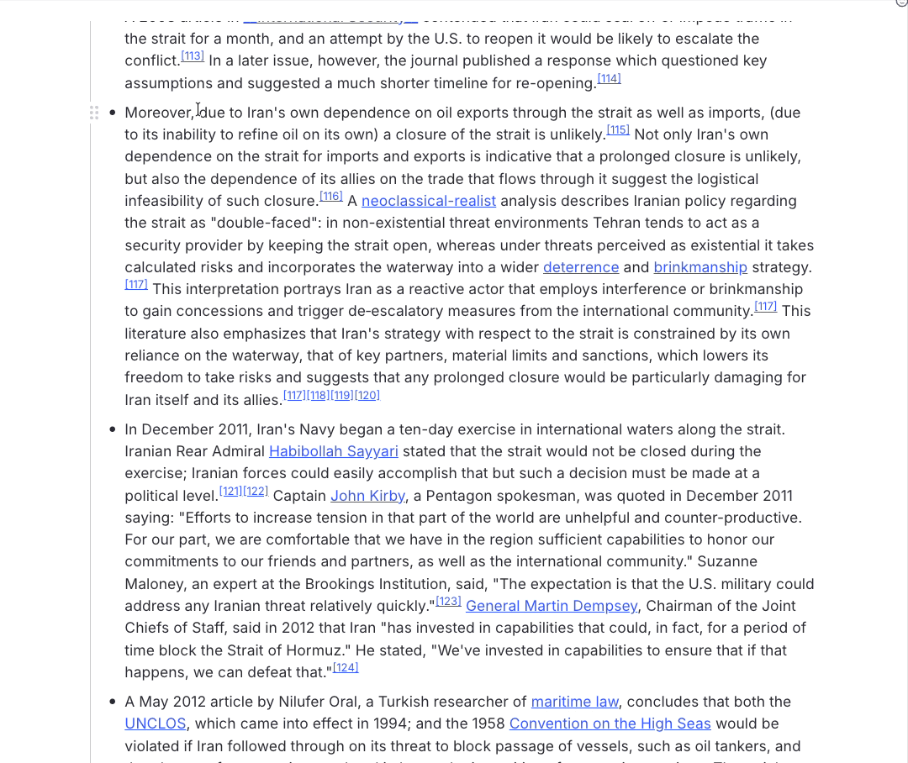
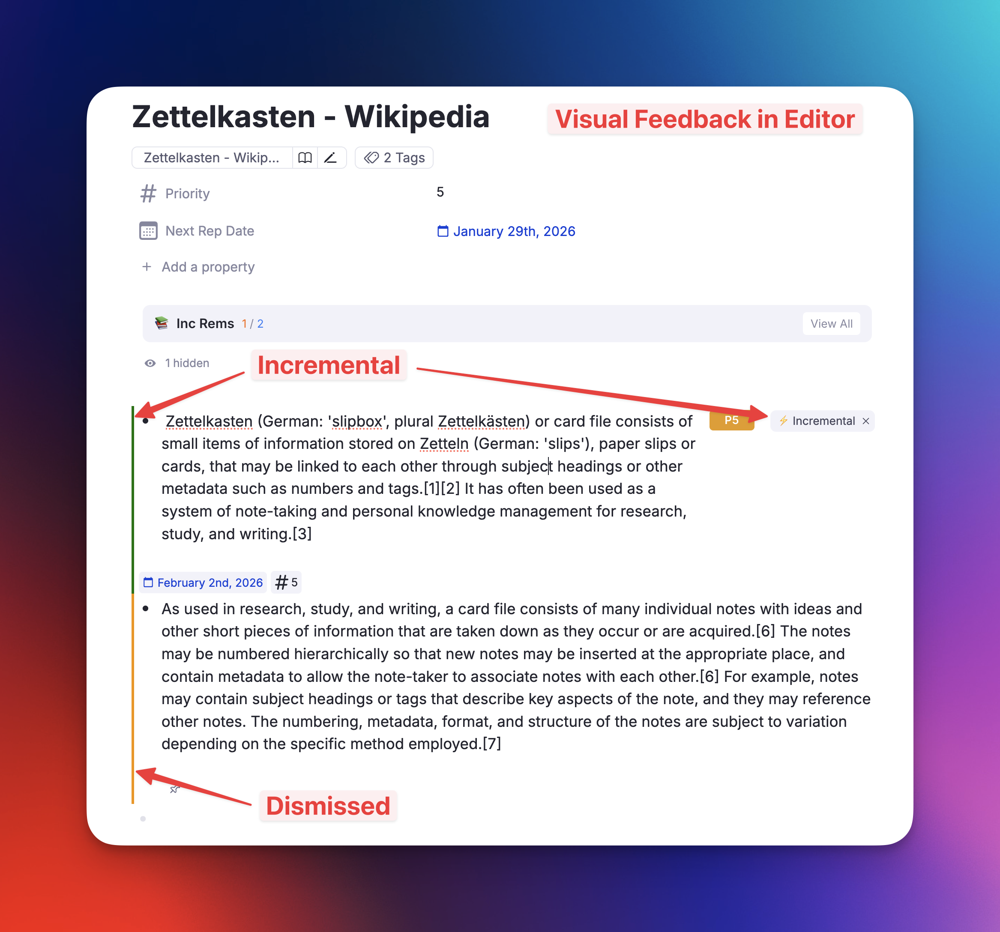
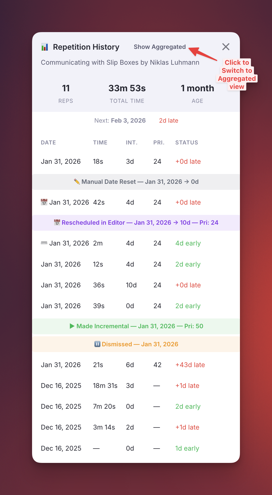
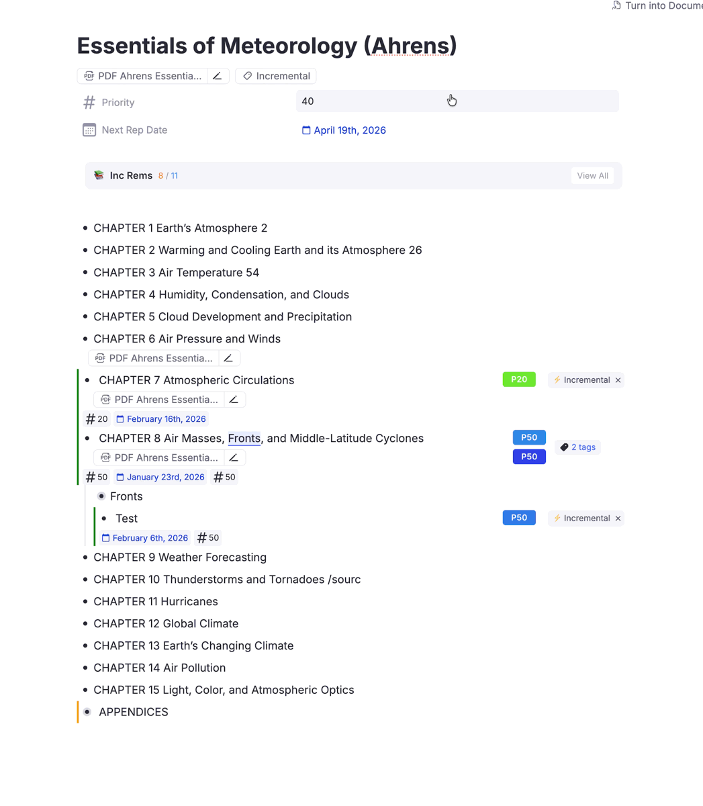

Getting Started with Incremental Everything¶
Welcome to Incremental Everything! This guide will walk you through the basics of making Rems incremental, reviewing them, and managing your learning workflow.
What is Incremental Learning?¶
Incremental learning transforms how you acquire knowledge. Instead of reading a book from cover to cover or watching a full lecture, you break content into smaller pieces and review them over time—interleaved with flashcards and other material.
Key Benefits: - Process 1000+ sources in parallel without losing track - Prioritize ruthlessly to focus on what matters most - Build lasting knowledge by converting passive reading into active flashcards
For a deeper understanding, see What is Incrementalism?.
Installation¶
- Open the RemNote Plugin Store
- Search for "Incremental Everything"
- Click Install
Making a Rem Incremental¶
The first step is to convert a Rem, PDF, or website into an "Incremental Rem" so it will appear in your queue.
Method 1: Slash Command¶
- Focus on any Rem in the editor
- Type
/Make Incremental (Extract)and select the command - The Rem is now tagged with the
Incrementalpowerup
Method 2: Keyboard Shortcut¶
- Alt+X (or Opt+X on Mac) — Makes the focused Rem incremental. If text is selected, it creates a new Reviewing-Items-in-the-Editor#extracting-text from that selection.
- Alt+Shift+X — Makes the Rem incremental AND opens the priority popup. Supports Reviewing-Items-in-the-Editor#extracting-text from selections.

Method 3: Document Menu¶
- Click the ⋮ (three dots) menu at the top-right of any document
- Select "Toggle Incremental Rem"
- The priority popup will open automatically
What Happens When You Make a Rem Incremental?¶
- The Rem receives the
Incrementalpowerup tag - A "Made Incremental" event is recorded in the repetition history
- The Rem is scheduled for its first review (based on your Initial Interval setting, default: 1 day)
- The Rem will now appear in your queue, interleaved with flashcards
Reviewing Incremental Rems in the Queue¶
When you enter the queue, your Incremental Rems appear alongside your flashcards. The Answer Buttons bar at the bottom provides your main actions:
| Button | Shortcut | What it does |
|---|---|---|
| Next | — | Marks item as reviewed, schedules next repetition |
| Reschedule | Ctrl+J | Manually set the next review date |
| Dismiss | — | Finishes the item, removes Incremental tag |
| Change Priority | Alt+P | Opens priority popup |
| Review & Open | — | Reviews the item AND opens it in the editor |
The "One Memory, One Action" Principle¶
Before clicking "Next," always perform at least one productive action: - Extract a key sentence as a new Incremental Rem - Create a flashcard from important information - Rephrase a confusing passage - Highlight essential content
Avoid "futile reviews" where you just glance at content without engaging.
For more details, see Reviewing Items in the Queue.
Dismissing an Incremental Rem (Dismiss Button)¶
When you've fully processed an item and extracted all valuable knowledge:
- Click the "Dismiss" button in the queue, OR
- Manually remove the
Incrementaltag in the editor
What Happens When You Dismiss?¶
- The Rem's complete repetition history is preserved in a
Dismissedpowerup - The
Incrementaltag is removed - A yellow left border appears in the editor to indicate the Rem has preserved history
- The item no longer appears in your queue

Visual Settings: - Show Yellow Left Border for Dismissed Rems — Toggle the visual indicator (default: on) - Hide Dismissed Tag in Editor — Reduce clutter by hiding the tag (default: on)
Re-activating a Dismissed Rem¶
If you want to review a dismissed item again:
- Make the Rem incremental again using Alt+X or the slash command
- The old history is automatically restored and merged
- A "Made Incremental" marker is added to distinguish the new learning session
This allows you to: - See your complete learning journey across multiple sessions - Resume where you left off with preserved context - Analyze your long-term engagement with material
Repetition History & Statistics¶
The plugin offers two powerful views to analyze your learning progress: the Single History View for individual items and the Aggregated History View for entire folders and knowledge trees.
1. Single History View¶
Gives you detailed insights into your review history for any specific Incremental Rem.
What it shows: * Stats Row: Total reps, total time spent, age since first review * Next Review: Scheduled date with days late/early indicator * History Table: Date, time spent, interval, priority, and status for each repetition

2. Aggregated History View¶
Gives you a high-level overview of progress stats for a Rem and all its descendants. Perfect for checking your progress on a specific book, course, or topic.
What it shows: * Tree-View Hierarchy: Displays a hierarchical tree of your Incremental Rems, sorted exactly as they appear in your document. * Aggregated Metrics: Shows total repetitions, time spent, and item counts for the current selection plus all its descendants.

How to Access (Smart Routing)¶
There is a single unified command: Open IncRem Repetition History.
- Keyboard Shortcut:
Ctrl+Shift+H(works in both Queue and Editor) - In the Queue: Click the 📊 icon in the Answer Buttons info bar
Smart Behavior: * If you select an Incremental Rem (or one with history), it opens the Single History View. * If you select a Folder (that has Incremental descendants), it automatically opens the Aggregated History View.
Switching Views¶
You can easily toggle between views using the button in the window header: * Click "Show Aggregated" from the Single View to see the tree stats. * Click "Show Single" from the Aggregated View to focus on the specific item.
Event Markers¶
The history includes special event markers:
| Marker | Meaning |
|---|---|
| ▶ Made Incremental | When the Rem was first made (or re-made) incremental |
| ⏸ Dismissed | When the Rem was dismissed via the Dismiss button |
These markers help you understand your learning timeline and distinguish between different review sessions.
Setting Priorities¶
Priority is crucial for managing information overload. Lower numbers = higher priority.
| Priority | Meaning |
|---|---|
| 0-20 | Critical, must review frequently |
| 20-50 | Important, regular review |
| 50-80 | Moderate, occasional review |
| 80-100 | Low priority, review when time permits |
Quick Methods¶
- Alt+P — Full priority popup with analytics
- Ctrl+Opt+P — Light priority popup (faster)
- Ctrl+Opt+Up/Down — Quick Priority Change: Adjust priority instantly without opening any popup
For comprehensive details, see Prioritization & Sorting.
Next Steps¶
Now that you understand the basics, explore these topics:
- Prioritization & Sorting — Master the priority system
- Reviewing Items in the Queue — Deep dive into the queue workflow
- Create Incremental Rem from PDF Highlights — Extract from PDFs
- Keyboard Shortcuts — Speed up your workflow
- Changelog — See the latest features
Happy Incremental Learning! 🚀